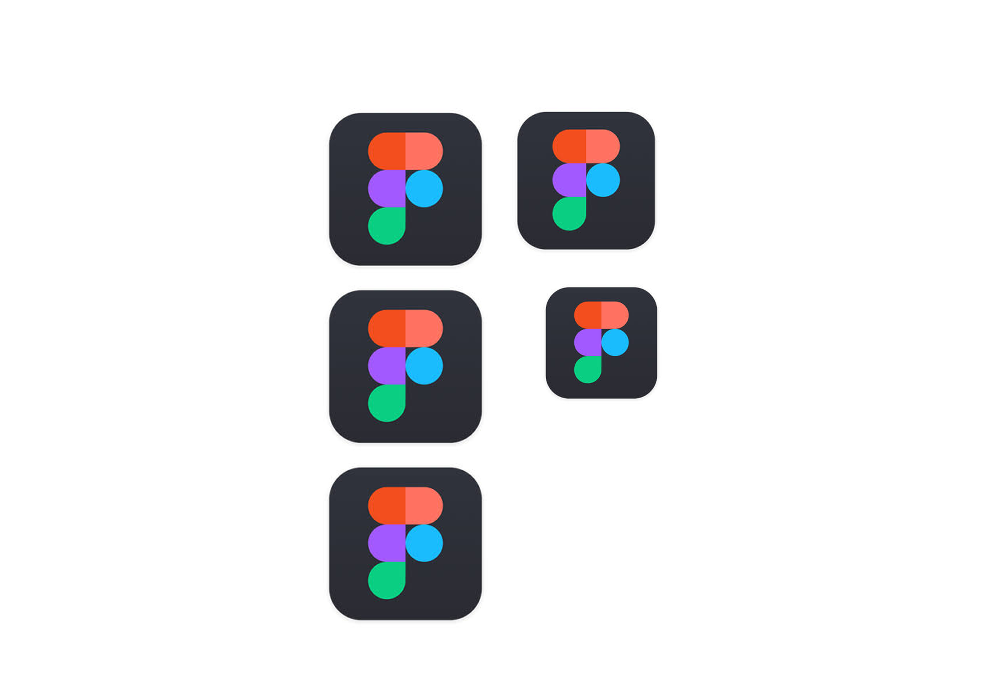
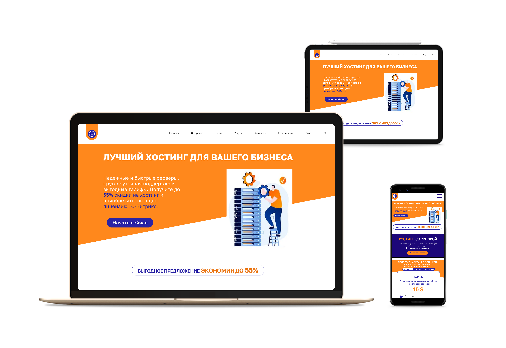
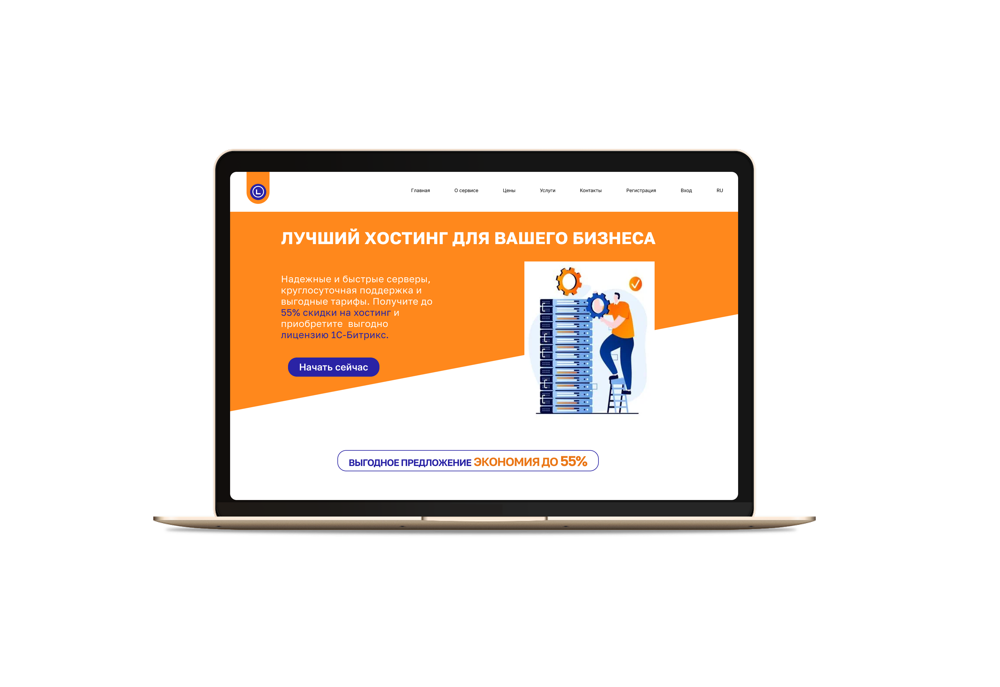

Brief
The project is a commercial website designed for a hosting provider offering fast and reliable servers, 24/7 technical support, and licensed 1C-Bitrix solutions. The main goal was to present hosting services in a clear, structured, and visually attractive way while emphasizing trust, performance, and financial benefits for clients.
Special focus was placed on promotional offers — users can receive up to 55% discount on hosting plans and purchase 1C-Bitrix licenses at a competitive price. The website is aimed at small and medium businesses, freelancers, developers, and companies looking for a stable hosting solution for corporate websites and online stores.

Sketches / Design
During the design stage, wireframes and UI concepts were created in Figma, focusing on logical content structure and conversion-oriented layouts. The homepage was designed as a sequence of clear sections: hero block with a value proposition, promotional banners, tariff comparison, advantages, and FAQ.
The visual style is based on contrastive orange and dark blue accents, which communicate reliability, energy, and technical expertise. Rounded cards, large buttons, and visual illustrations help guide the user’s attention and simplify decision-making.

Tools & Technologies
The project was fully designed in Figma using auto layout for scalable components, grid systems for precise alignment, and reusable UI components for tariffs, cards, and banners.
The layout was designed with further implementation in mind using HTML and Tailwind CSS for fast and adaptive styling, Alpine.js for lightweight interactivity, and backend integration with hosting management systems and CMS solutions such as 1C-Bitrix.

Responsiveness
The website design is fully responsive and optimized for desktop screens, laptops, tablets, and mobile devices. Separate layouts were created for large and medium screens, ensuring that tariff cards, banners, and navigation remain readable and easy to use on any device.
Special attention was paid to mobile usability, as many users choose hosting plans directly from smartphones.

Final Result
The final result is a modern, conversion-focused hosting website that clearly communicates its value proposition: reliable servers, high speed, professional support, and competitive pricing.
The project combines strong visual identity, clear product presentation, promotional emphasis (up to 55% savings), and a user-friendly experience. The design can be effectively used as a foundation for a real commercial hosting service.